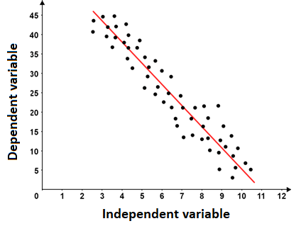
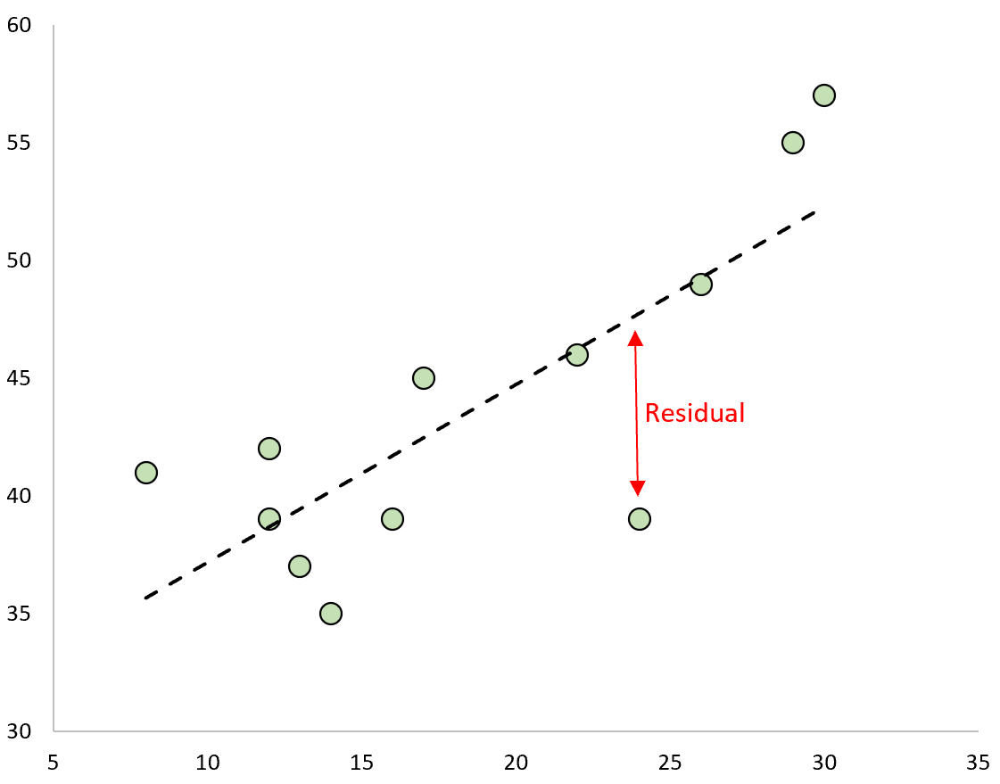

This first chapter introduces the goals of econometrics. Then, we dive into the simple linear regression as a way to measure relationships between variables. We discuss the layout of the model, the estimation process of parameters, and the properties of the ordinary least squares estimator.
1.1: Introduction to Econometrics
Goal of Econometrics
What is the goal of econometrics? It is to use real-world data to analyse our hypotheses about topics in the social sciences.
The most common use of econometrics is to find causal relationships between variables:
- How does education effect individual’s incomes?
- How does democracy effect a country’s economic growth?
The issue with answering these questions is that we often do not have data for everyone in the population.
- For example, if our goal is to accurately calculate the effect of education on income in the USA, we would have to have data on every single person (300 million+) in the US.
That obviously is far too difficult and costly. But cost is not the only concern - sometimes, as we get more into causal inference, we will realise that the population is not even measurable.
- The true value of the relationship in the population (that we do not know) is called the population parameter, and is labelled \theta.
So what do we have to do? We do sampling:
- Sampling is taking a small subset of the population (let us say 1,000 people), and estimating the relationship between two variables there. This is called estimation
- The hope is that our sample is somewhat representative of the population, so we can use our sample estimate to say something about the population. This is called statistical inference.
But before we even get to the second part on inference, we have to do estimation within our sample.
Properties of Estimators
We can estimate the relationship between variables with an estimator.
- An estimator is a procedure for taking sample data to produce an estimate value of the true population relationship.
- The outcome of an estimator is an estimate, which we notate as \hat\theta_n.
- Note: if we take another sample, and run the estimator again, we will end up with a different estimate \hat\theta_n. This is because another sample is unlikely to contain the same exact same individuals, so our estimate will differ between samples.
Estimators have two properties: Unbiasedness and Variance.
Unbiasedness is whether if an estimator is, on average, predicting the correct population value. Mathematically:
E(\hat\theta_n) = \theta
Basically, under many different samples and estimates, we on average get the population value.
- We want an unbiased estimator - because that means on average, we are getting the right estimate of the population parameter \theta.
Variance is how spread out an estimator’s estimates are over different samples. It is defined as:
Var(\hat\theta_n) = E((\hat\theta_n - E(\hat\theta_n))^2)
Basically, under many different samples and estimates, how far apart are our different estimates?
Ideally, we want an estimator to be both unbiased and have low variance, since that means we are on average estimating the correct population parameter \theta, and also have our estimates close together around the true parameter \theta.
Note how I have been using the word relationship, not causal effect.
Causality is not established through estimators, it is established through a strong experimental design (which we will cover in part II of the course).
1.2: Simple Linear Regression
Explaining Relationships Between Variables
How can we explore the relationship between a continuous x variable and a continuous y variable?
One way to explore the relationship is with a best-fit line. A best-fit line is useful, since the slope of the best-fit line represents the change in y for every unit change in x.

In the figure above, we have plotted a number of observations, and implemented a best-fit line in red. The graph here introduces some common terminology:
- The independent variable, also called the explanatory variable or treatment variable, is the variable that we believe is doing the causing. It is typically notated x.
- The dependent variable, also called the response variable or outcome variable, is the variable that is affected by a change in the independent variable. The dependent variable is typically notated with y.
We know from algebra that a linear equation takes the form y=mx+b. The slope m describes the rate of change of y for a one unit change in x.
- Thus, the slope is a measurement of the relationship between x and y.
Thus, if we can fit a best-fit line to our data, we can look at the slope, and determine the relationship between x and y.
Note how I have been using the word relationship, not causal effect.
Causality is not established through estimators, it is established through a strong experimental design (which we will cover in part II of the course).
Linear Regression Model
How can we fit a best-fit line in order to find the relationship between x and y? The main way to do this is with the simple linear regression model.
The simple linear regression model takes the following form.
y_i = \beta_0 + \beta_1 x_i + u_i
- Where we have n number of observations in our data, i being any one of them, and each observation has an x and y value (x_i, y_i).
- Where \beta_0 (intercept) and \beta_1 (slope) are coefficients of the model that need to be estimated (since they will differ in value between different samples and data).
- Where u_i is the error term. Remember, y_i is any value in the conditional distribution y_i|x_i, so it may not be exactly at the expected value of the conditional distribution. Thus, we have to add an error term to account for this distribution, where \mathbb{E}[u_i] = 0 and Var[u_i] = \sigma^2.
Fitted Values and Best-Fit Lines
We have discussed the form a simple linear regression takes. However, this is not the best-fit line: we still need to estimate the coefficients \beta_0 (intercept) and \beta_1 (slope) in order to create a best-fit line.
- The estimates of \beta_0 and \beta_1 that we obtain will be denoted with a hat ^: \hat\beta_0 and \hat\beta_1.
- We will discuss the estimation process in the next section.
Once we have obtained our estimates of the coefficients, we will have a best-fit line, also called a fitted-values model:
\hat{y} = \hat\beta_0 + \hat\beta_1x_i
- Where \hat{y} are the predicted values of y based on our best-fit line.
- Where \hat\beta_0 and \hat\beta_1 are our estimates for the true coefficients \beta_0 and \beta_1.
- Note that the error term u_i disappears. This is because the average value of u_i is \mathbb{E} [u_i] = 0, so we do not need to include the term.
The term we care most about is \hat\beta_1, which is the slope of the best-fit line, which tells us the relationship between x and y.
1.3: Ordinary Least Squares Estimator
Sum of Squared Errors
We want to fit a best-fit line that is accurate. So, we want to find the \beta_0 (intercept) and \beta_1 (slope) values that will best fit our observed data.
One way we can fit an accurate line is to find the best-fit line that minimises the sum of squared errors.
The sum of squared errors (SSE) is as follows:
\begin{split} SSE & = \sum\limits_{i=1}^n (y_i - \hat y_i)^2 \\ & = \sum\limits_{i=1}^n (y_i - \hat\beta_0 - \hat\beta_1 x_i)^2 \end{split}
- The sum of squared errors is exactly as it sounds. Find the error, the distance between the actual y_i and predicted \hat y, which is y_i - \hat y, then square that error (y_i - \hat y_i)^2, then sum up for all observations i in the data.
- We get the second equation by substituting in the fitted values model (discussed in the previous section), where \hat{y} = \hat\beta_0 + \hat\beta_1x_i.
Ordinary Least Squares Estimator
The Ordinary Least Squares (OLS) Estimator estimates the coefficients \beta_0 and \beta_1 by finding the values of \beta_0 and \beta_1 that result in the line with the smallest sum of squared errors.
We can describe the goal of OLS in a more mathematical way:
The goal of the Ordinary Least Squares (OLS) Estimator is to find the values of \beta_0 and \beta_1 that make the following statement true:
\begin{split} (\hat{\beta}_0, \hat{\beta}_1) & = \arg \min\limits_{\hat{\beta}_0, \hat{\beta}_1} \sum\limits_{i=1}^n (y_i - \hat{\beta}_0 - \hat{\beta}_1x_i)^2 \\ & = \arg \min\limits_{\hat{\alpha}, \hat{\beta}} S(\hat{\beta}_0, \hat{\beta}_1) \end{split}
Where function S is the sum of squared errors.
How do we minimise S (the function of the sum of squared errors)?
- From calculus, we know that a minimum/maximum of a function is where the derivative of the function is equal to 0.
Thus, let us find the partial derivative of the function S in respect to both \hat\beta_0 and \hat\beta_1, and set them equal to 0. This is also called the first-order conditions.
First Order Conditions
First, let us find the partial derivative of S in respect to \hat\beta_0:
\frac{\partial S(\hat{\beta}_0, \hat{\beta}_1)}{\partial \hat{\beta}_0} = \frac{\partial }{\partial \hat{\beta}_0} \left[ \sum\limits_{i=1}^n (y_i - \hat{\beta}_0 - \hat{\beta}_1x_i)^2 \right]
First, ignore the summation. The partial derivative of the internal section, using chain rule, is the following:
\frac{\partial}{\partial \hat{\beta}_0} \left[ (y_i - \hat{\beta}_0 - \hat{\beta}_1 x_i)^2 \right] = -2(y_i - \hat{\beta}_0 - \hat{\beta}_1 x_i)
But how do we deal with the summation? We know that there is the sum rule of derivatives [f(x) + g(x)]' = f'(x) + g'(x). Thus, we know we just sum up the derivatives to get the derivative:
\begin{split} \frac{\partial S(\hat{\beta}_0, \hat{\beta}_1)}{\partial \hat{\beta}_0} & = \sum\limits_{-i=1}^n \left[ -2(y_i - \hat{\beta}_0 - \hat{\beta}_1 x_i) \right] \\ & = -2 \sum\limits_{i=1}^n (y_i - \hat{\beta}_0 - \hat{\beta}_1 x_i) \end{split}
To find the value of \hat\beta_0 that minimises S, we set the derivative equal to 0. We can ignore the -2, since if the summation is equal to 0, the whole derivative will equal 0. Thus, the first order condition is:
\sum\limits_{i=1}^n (y_i - \hat{\beta}_0 - \hat{\beta}_1 x_i) = 0
Now, let us do the same for \hat\beta_1. Using the same steps as before
\begin{split} \frac{\partial S(\hat{\beta}_0, \hat{\beta}_1)}{\partial \hat{\beta}_1} & = \sum\limits_{i=1}^n \left[ -2x_i(y_i - \hat{\beta}_0 - \hat{\beta}_1 x_i) \right] \\ & = -2 \sum\limits_{i=1}^n x_i(y_i - \hat{\beta}_0 - \hat{\beta}_1 x_i) \end{split}
The first order condition for \hat\beta_1 will be (again, ignoring the -2 for the same reason as before):
\sum\limits_{i=1}^n x_i(y_i - \hat{\beta}_0 - \hat{\beta}_1 x_i) = 0
Thus, the first order conditions of OLS are:
\begin{split} & \sum\limits_{i=1}^n (y_i - \hat{\beta}_0 - \hat{\beta}_1 x_i) = 0 \\ & \sum\limits_{i=1}^n x_i (y_i - \hat{\beta}_0 - \hat{\beta}_1 x_i) = 0 \end{split}
Solving the System of Equations
We now have our two first-order conditions. Now, we basically have a 2-equation system of equations, with 2 variables.
- We can solve this through substitution - in the first equation, solve for \hat\beta_0 in terms of \hat\beta_1.
- Then, plug in \hat\beta_0 in terms of \hat\beta_1 into the second equation, thus making that a one-variable equation. We can solve that equation for \hat\beta_1, then find \hat\beta_0.
First, let us solve the first equation for \hat\beta_0 in terms of \hat\beta_1:
\begin{split}\sum\limits_{i=1}^n (y_i - \hat{\beta}_0 - \hat{\beta}_1 x_i) & = 0 \\ \sum\limits_{i=1}^n y_i - n \hat{\beta}_0 - \hat{\beta}_1 \sum\limits_{i=1}^n x_i & = 0 \\ -n\hat{\beta}_0 &= -\sum\limits_{i=1}^n y_i + \hat{\beta}_1\sum\limits_{i=1}^nx_i \\ \hat{\beta}_0 & = \frac{1}{n} \sum\limits_{i=1}^n y_i - \frac{1}{n}\hat{\beta}_1 \sum\limits_{i=1}^n x_i \\ & = \bar{y} - \hat{\beta}_1 \bar{x} \end{split}
Now, let us substitute our calculated \hat{\beta}_0 = \bar{y} - \hat{\beta}_1 \bar{x} into the \hat{\beta}_1 condition and solve for \hat{\beta}_1:
\begin{split}0 & = \sum\limits_{i=1}^n \left[ x_i(y_i - [\bar{y} - \hat{\beta}_1\bar{x}] - \hat{\beta}_1x_i) \right] \\ & = \sum\limits_{i=1}^n \left[ x_i(y_i - \bar{y} - \hat{\beta}_1 (x_i - \bar{x})) \right] \\ & = \sum\limits_{i=1}^n \left[ x_i(y_i - \bar{y}) - x_i \hat{\beta}_1(x_i - \bar{x}) \right] \\ & = \sum\limits_{i=1}^n x_i (y_i - \bar{y}) - \hat{\beta}_1 \sum\limits_{i=1}^nx_i (x_i - \bar{x})\end{split}
To help us solve this problem, note these 3 properties of summation:
\begin{split}& \sum\limits_{i=1}^n (x_i - \bar{x}) = 0 \\& \sum\limits_{i=1}^n x_i(y_i - \bar{y}) = \sum\limits_{i=1}^n(x_i - \bar{x}) (y_i - \bar{y}) \\& \sum\limits_{i=1}^n x_i(x_i - \bar{x}) = \sum\limits_{i=1}^n(x_i - \bar{x})^2\end{split}
Knowing these properties of summation, we can transform what we had before into:
\begin{split} 0 & = \sum\limits_{i=1}^n(x_i - \bar{x})(y_i - \bar{y}) - \hat{\beta}_1 \sum\limits_{i=1}^n (x_i - \bar{x})^2 \\ \hat{\beta}_1 \sum\limits_{i=1}^n (x_i - \bar{x})^2 & = \sum\limits_{i=1}^n(x_i - \bar{x})(y_i - \bar{y}) \\ \hat{\beta}_1 & = \frac{\sum\limits_{i=1}^n (x_i - \bar{x})(y_i - \bar{y})}{\sum\limits_{i=1}^n(x_i - \bar{x})^2} \end{split}
Thus, the OLS estimate \hat\beta_1 (slope) of the linear regression model is:
\hat{\beta}_1 = \frac{\sum\limits_{i=1}^n (x_i - \bar{x})(y_i - \bar{y})}{\sum\limits_{i=1}^n(x_i - \bar{x})^2} = \frac{Cov(x, y)}{Var(x)}
This is the expected change in y given a one unit increase in x.
- Remember, this is the relationship between x and y, not the causal effect.
Of course, we still need to find \hat\beta_0 (the slope). We found that \hat\beta_0 = \bar{y} - \hat{\beta}_1 \bar{x} earlier, so we just plug that in.
And now, we have our estimates \hat\beta_0 and \hat\beta_1, and thus we now have a best-fit line and an estimate of the relationship between x and y.
1.4: Algebraic Properties of the OLS Estimator
Once we have our OLS estimates \hat\beta_1 and \hat\beta_1, we can obtain both our fitted values (explained previously), and the OLS residuals \hat u_i:
\hat u_i \equiv y_i - \hat y_i = y_i - \hat\beta_0 - \hat\beta_1 x_i
- Important note, the residual \hat u_i is different from the error u_i.
- The residual \hat u_i is after we have calculated our best-fit line, and found the distance between that and our predicted points.
- The error is prior to the estimation, if we recall from the simple linear model, it is the distance of y_i to the conditional expected value \mathbb{E}[y_i | x_i].
The figure below shows what a residual for a point looks like: the distance between the best fit line

Recall that the OLS estimates \hat\beta_0 and \hat\beta_1 are chosen to satisfy the following first order conditions:
\begin{split} & \sum\limits_{i=1}^n (y_i - \hat{\beta}_0 - \hat{\beta}_1 x_i) = 0 \\ & \sum\limits_{i=1}^n x_i (y_i - \hat{\beta}_0 - \hat{\beta}_1 x_i) = 0 \end{split}
We can plug in \hat u_i = y_i - \hat\beta_0 - \hat\beta_1 x_i to obtain a few properties.
First, OLS residuals always add up to zero, since:
\sum\limits_{i=1}^n (y_i - \hat{\beta}_0 - \hat{\beta}_1 x_i) = 0 = \sum\limits_{i=1}^n \hat u_i
- This property ensures that the average value of y_i in our data is the same as the average value of our predictions \hat y_i.
- This also means that the OLS best-fit line always goes through the “middle” of the data.
Second, the sample covariance (and correlation) between regressor and residual is always zero, since:
\sum\limits_{i=1}^n x_i (y_i - \hat{\beta}_0 - \hat{\beta}_1 x_i) = 0 = \sum\limits_{i=1}^n x_i \hat u_i
Third, the regression always passes through the means.
Remember our solution for \hat\beta_0 in OLS was \hat\beta_0 = \bar{y} - \hat{\beta}_1 \bar{x}. Rearranging this equation, we get:
\begin{split} \hat\beta_0 & = \bar{y} - \hat{\beta}_1 \bar{x} \\ \hat\beta_0 + \hat\beta_1 \bar x & = \bar y \\ \bar y & = \hat\beta_0 + \hat\beta_1 \bar x \end{split}
Thus, the OLS estimated best-fit line always passes though point (\bar x, \bar y).
Finally, recall that our \hat\beta_1 solution of OLS is:
\hat{\beta}_1 = \frac{Cov(x, y)}{Var(x)}
- This tells us that for \hat\beta_1 to exist, Var(x) ≠ 0.
- This is the only assumption that must be met in order to calculate OLS estimates (however, other assumptions will be needed for the causal interpreation of OLS estimates, covered in section).
1.5: Interpretation and Reparamaterisation
We now have estimated \hat\beta_0 and \hat\beta_1. But what do these actually mean in the context of the relationship between x and y?
- Let us start with \hat\beta_1, which is the slope, the more important of the two coefficients.
Interpretation of \hat\beta_1
We know that in a linear model, \mathbb{E}[y_i|x_i] = \beta_0 + \beta_1 x_i, the coefficient \beta_1 is the slope.
- And the slope is the change in y given a one unit increase in x.
Using this knowledge, we can interpret estimate \hat\beta_1.
When x increases by one unit, there is an expected \hat{\beta}_1 unit change in y.
Note how I have been using the word relationship, not causal effect.
Causality is not established through estimators, it is established through a strong experimental design (which we will cover in part II of the course).
Note that this interpretation of \hat\beta_1 only applies to continuous x variables and continuous/ordinal y variables.
Interpretation of \hat\beta_1 for Binary x
Binary explanatory variables are variables with 2 values, 0 and 1.
- Binary explanatory variables are extremely common in the social sciences. They can include things such as yes/no questions, treatment/control, true/false questions, voted/did not vote, etc.
Binary explanatory variables will change the interpretations of our coefficients.
We can “solve” for these interpretations. Assume x has two categories x=0 and x=1:
\begin{split} & \hat y_{i, \ x = 0} = \hat\beta_0 + \hat\beta_1(0) = \hat\beta_0 \\ & \hat y_{i, \ x = 1} = \hat\beta_0 + \hat\beta_1(1) = \hat\beta_0 + \hat\beta_1 \\ & \hat y_{i, \ x = 1} - \hat y_{i, \ x = 0} = (\hat\beta_0 + \hat\beta_1) - \hat\beta_0 = \hat\beta_1 \end{split}
Thus, we can interpret the coefficients as follows:
When x is a binary explanatory variable:
- \hat\beta_0 is the expected value of y given an observation in category x = 0
- \hat\beta_0 + \hat\beta_1 is the expected value of y given an observation in category x = 1
- \hat\beta_1 is the expected difference in y between the categories x=1 and x=0.
Note how I have been using the word relationship, not causal effect.
Causality is not established through estimators, it is established through a strong experimental design (which we will cover in part II of the course).
Interpretation of \hat\beta_0
We know that in a linear model, \mathbb{E}[y_i|x_i] = \beta_0 + \beta_1 x_i, the coefficient \beta_0 is the y-intercept.
- And the y-intercept is the change value of y given x=0.
We can prove this mathematically:
\begin{split} \hat y_{i, \ x_i = 0} & = \hat\beta_0 + \hat\beta_1 x_i \\ & = \hat\beta_0 + \hat\beta_1(0) \\ & = \hat\beta_0 \end{split}
Thus, knowing this, we can interpret \hat\beta_0.
When x=0, the expected value of y is \hat{\beta}_0
Reparamatising \beta_1 in Terms of Standard Deviations
Sometimes, it is hard to understand what changes in y and x mean in terms of units. For example, if we are measuring “democracy”, what does a 5 unit change in democracy mean? Is that a lot?
We can add more relevant detail by expressing the change of y and x in standard deviations.
How do we calculate this? Well, let us solve for the change in \hat{y}_i/\sigma_y given x_i = x and x = x + \sigma_X. This will tell us how much \hat{y} changes by given a increase of one standard deviation in x:
\begin{split} \frac{\hat y_{i, \ x_i = x + \sigma_x}}{\sigma_y} - \frac{\hat y_{i, \ x_i = x}}{\sigma_y} & = \frac{\hat\beta_0 + \hat\beta_1 x_i}{\sigma_y} - \frac{\hat\beta_0 + \hat\beta_1 x_i}{\sigma_y} \\ & = \frac{\hat\beta_0 + \hat\beta_1 (x+\sigma_x) - (\hat\beta_0 + \hat\beta_1 (x))}{\sigma_y} \\ & = \frac{\hat\beta_0 - \hat\beta_0 + \hat\beta_1x - \hat\beta_1x+\hat\beta_1\sigma_x}{\sigma_y} \\ & = \frac{\hat\beta_1 \sigma_x}{\sigma_y} \end{split}
For a one-std. deviation increase in x, there is an expected \hat{\beta}_1 \sigma_x / \sigma_y-std. deviation change in Y.
Note how I have been using the word relationship, not causal effect.
Causality is not established through estimators, it is established through a strong experimental design (which we will cover in part II of the course).
1.6: R-Squared and Goodness of Fit
For each observation, we know that the actual y_i value is the predicted \hat y_i plus the residual term \hat u_i. Thus:
y_i = \hat y_i + \hat u_i
Now, let us define these three concepts: the total sum of squares (SST), explained sum of squares (SSE), and residual sum of squares (SSR):
\begin{split} & SST = \sum\limits_{i=1}^n (y_i - \bar y)^2 \\ & SSE = \sum\limits_{i=1}^n (\hat y_i - \bar y)^2 \\ & SSR = \sum\limits_{i=1}^n (\hat u_i)^2 \end{split}
- The SST explains the total amount of variation in y
- The SSE is the amount of variation in y explained by our model
- The SSR is the amount of variation in y not explained by our model
Let us look at the total sum of squares (SST). We can manipulate it as follows:
\begin{split} SST & = \sum\limits_{i=1}^n (y_i - \bar y)^2 \\ & = \sum\limits_{i=1}^n(y_i - \hat y_i+ \hat y_i - \bar y)^2 \\ & = \sum\limits_{i=1}^n[\hat u_i + (\hat y_i - \bar y)]^2 \\ \end{split}
And since we know \sum \hat y_i \hat u_i = 0, we can further simplify to:
\begin{split} SST & = \sum\limits_{i=1}^n u_i^2 + \sum\limits_{i=1}^n(\hat y_i - \bar y)^2 \\ & = SSE + SSR \end{split}
This makes sense: After all, SSE is the squared errors explained by the model, and SSR is the residual (non-explained) parts of the model, so together, they should be equal to the total sum of squares.
Using these properties, we can create a statistic which explains how well our model explains the variation in y. This statistic is called R^2:
R^2 = \frac{SSE}{SST} = 1 - \frac{SSR}{SST}
What does this R^2 value mean?
- Well SSE is the amount of variation in y explained by our model, and SST is the total amount of variation in y.
- Thus, R^2 is the proportion of variation in y explained by our model.
R^2 is always between 0 and 1:
- This is because it is a proportion, so and 0 ≤ SSE ≤ SST, so this must be true.
- Values closer to 1 mean our model explains the variance in y more
- Values closer to 0 mean our model explains less of the variance in y.
However, be careful when using R^2. Just because it is high, does not mean we can infer anything from it.
Extra note, R^2 is also equal to the correlation coefficient between y_i and \hat y_i.
1.7: Gauss-Markov and Unbiasedness of the OLS Estimator
An unbiased estimator, if we recall from section 1.1, means that over many different estimates, the expected value of all the estimates is the true parameter value: E(\hat{\theta}_n) = \theta.
Unbiasedness is desirable property of causal estimators. OLS (for simple linear regression) is an unbiased estimator under 4 conditions:
The Gauss-Markov Theorem states that the ordinary least squares estimator is unbiased under 3 conditions:
- Linearity of the equation (no coefficients \beta_0, ..., \beta_k can be multiplied together. This does not apply to explanatory variables, only the coefficients.
- Random Sampling from the population.
- Explanatory variable x has variation (so not all values of x are the same).
- And the most important condition - Zero conditional mean: meaning that no matter the value of x, the expected value of the residual u_i is always 0. E(u|x) = 0 for all x.
Proof of the Unbiasedness of OLS
Before we start, here are a few key properties of summation
\begin{split}& \sum\limits_{i=1}^n (x_i - \bar{x}) = 0 \\& \sum\limits_{i=1}^n x_i(y_i - \bar{y}) = \sum\limits_{i=1}^n(x_i - \bar{x}) (y_i - \bar{y}) \\& \sum\limits_{i=1}^n x_i(x_i - \bar{x}) = \sum\limits_{i=1}^n(x_i - \bar{x})^2\end{split}
We want to show E(\beta_1) = \beta_1. Let us start off with the OLS estimator (we will use simple linear regression for simplicity):
\hat{\beta}_1 = \frac{\sum\limits_{i=1}^n (x_i - \bar{x})(y_i - \bar{y})}{\sum\limits_{i=1}^n(x_i - \bar{x})^2}
We can expand the numerator, and since \sum(x_i - \bar{x}) \bar{y} = \bar{y} \sum(x_i - \bar{x}) = 0 (see properties of summation above), we can get:
\hat{\beta}_1 = \frac{\sum\limits_{i=1}^n (x_i - \bar{x})y_i}{\sum\limits_{i=1}^n(x_i - \bar{x})^2}
- The existence of \hat{\beta}_1 is guaranteed by condition 2 from above, since the denominator is equal to Var(x), so that must not be 0.
Now, let us play with the numerator (note the properties of summation introduced earlier):
\begin{split}\sum\limits_{i=1}^n (x_i - \bar{x})y_i & = \sum\limits_{i=1}^n(x_i - \bar{x})(\beta_0 + \beta_1 x_i + u_i) \\& = \beta_0 \sum\limits_{i=1}^n(x_i - \bar{x}) + \beta_1 \sum\limits_{i=1}^n(x_i - \bar{x}) x_i + \sum\limits_{i=1}^n (x_i - \bar{x}) u_i \\& = 0 + \beta_1 \sum\limits_{i=1}^n(x_i - \bar{x})^2 + \sum\limits_{i=1}^n(x_i - \bar{x})u_i\end{split}
Now, putting the numerator back into the equation, we simplify:
\begin{split} \hat{\beta}_1 & = \frac{\beta_1 \sum\limits_{i=1}^n(x_i - \bar{x})^2 + \sum\limits_{i=1}^n(x_i - \bar{x})u_i}{\sum\limits_{i=1}^n(x_i - \bar{x})^2} \\ & = \beta_1 + \frac{\sum\limits_{i=1}^n(x_i - \bar{x}) u_i}{\sum\limits_{i=1}^n (x_i - \bar{x})^2} \\ & = \beta_1 + \sum\limits_{i=1}^n d_i u_i \end{split}
- Where d_i = \frac{x_i - \bar{x}}{\sum (x_i - \bar{x})^2}, which is a function of random variable x.
Now we need to find the expectation E(\beta_1).
First, do not worry about d_i. What should u_i be equal to? Naturally, the best estimate of u_i is its expected utility.
\mathbb{E} (\hat{\beta}_1 | x) = \beta_1 + \sum\limits_{i=1}^n d_i \ E(u_i | x)
We know by the fourth Gauss-Markov condition (Zero conditional mean), that E(u|x) = 0. Because these are randomly sampled (2nd Gauss-Markov condition), we also know E(u|x) = E(u_i | x_i) = E(u_i | x) Thus, that makes the entire summation equal to 0:
\mathbb{E}(\hat{\beta}_1 | x) = \mathbb{E}(\hat{\beta}_1) = \beta_1
Thus, the ordinary least squares estimator is unbiased, given 4 conditions (linearity, random sampling, variation in x, zero-conditional mean) are met.
- If conditions are met, we have an unbiased estimator in OLS.
- The key issue is assumption 3: Zero conditional mean E(u | x) = 0.
What causes this final assumption, zero conditional mean E(u|x) = 0, to be violated?
- Omitted Variable Bias. This is because if we have any other variable correlated with y and x in the error term u_i, E(u|x) will be violated. (we will discuss this more in chapter 2)
- Measurement Error in our variables (this is not discussed in this course, but the other course Advanced Quantitative Methods explores measurement).
- Sample Selection is not random.
- Simultaneity, when x has an effect on y and y has an effect on x.
What can we do to remedy this assumption so OLS is not biased?
- Add control variables with multiple linear regression (discussed in chapter 2)
- Use instrumental variables estimation to address the entire problem (discussed in chapter 6).